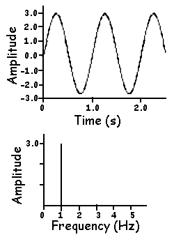
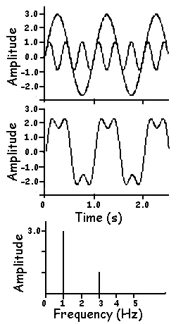
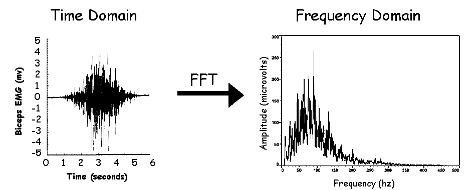
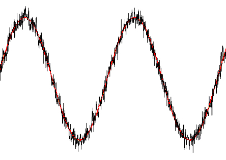
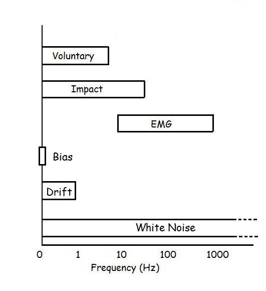
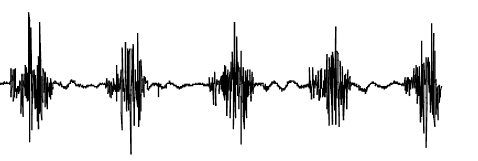
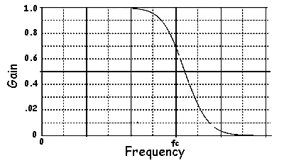
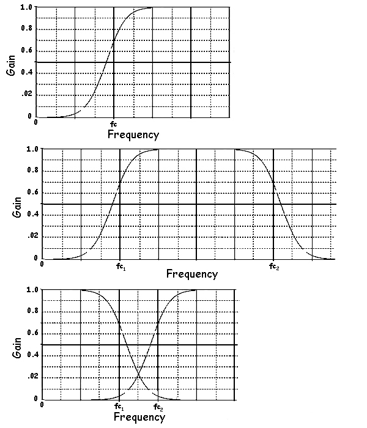

Frequency Domain Processing
As mentioned in the Differentiation Lab, high frequency noise on the digitized ball drop experiment caused large errors in velocity and especially acceleration. It was also mentioned in the Signal Conditioning lab that a signal must be sampled at twice the highest frequency component in the signal to avoid aliasing errors. When we examined the properties of transducers, we found out that the frequency response must match the signal being measured. We also know that the raw EMG signal shifts to lower frequencies as the muscle becomes fatigued. These are just a few reasons why it is important to be able examine biomechanical signals in the frequency domain. We are quite used to looking at signals in the time domain but this lecture shows us we can examine signals in the frequency domain.

Fourier Transform:
We are familiar with the appearance of a sine wave in the time domain. We know that the sine wave is characterized by its amplitude and frequency with larger waves having greater amplitude and higher frequency wave having more cycles per second (Hz). The same sine wave can be represented in the frequency domain with a single vertical line that shows its amplitude and frequency (see figure to the right).

It turns out that any time domain signal can be broken down to a series of sine waves and represented in the frequency domain. The figure on the left shows five sine waves at the top in the time domain. When these sine waves are added together to yield a one signal and plotted in the time domain, we see the complex signal in the middle. If we could take the signal in the middle and break it down into frequencies and amplitudes, we could plot the signal in the frequency domain. The graph on the bottom shows the frequency domain plot and we can clearly see the amplitudes and frequencies of the original sine waves.
There is a mathematical technique discovered by the French mathematician, Joseph Fourier (1768-1830) called the "Fourier Transform" that transforms time domain signals into frequency domain signals. The figure below shows a raw EMG signal in both the time domain and the frequency domain. Modern computer algorithms use the "Fast Fourier Transform" often referred to as an FFT. A more in-depth look at the FFT is examined in the Advanced Digital Signal Processing lecture.

Now that we can see signals in the frequency domain, we can determine the fatigue state of muscle, match the frequency response of a transducer, sample a signal at a high enough rate and remove high frequency noise from displacement data. The last point will be covered in the next section.
Filtering and Noise Removal:
Noise is defined as any part of a signal that is unwanted. The quality of signal is often measured by the signal to noise ratio. For example, lets us assume that we filmed a pendulum swinging back and forth and we digitized the vertical position. We know the the pendulum is a periodic signal that should look like a perfect sine wave. However, we also have random digitization errors so that our measured signal will have the true signal plus noise.
In this case, we have random, high frequency noise of the digitization errors (black) included with the actual pendulum motion (red). If the amplitude of the signal is 10 and the amplitude of the noise is 1, we have a 10:1 signal to noise ratio. We could reduce the noise by calculating the average or mean of a few data points and moving through the signal step by step. This procedure is called a moving average and it will improve the signal to noise ratio but there is a better way. If we know that the pendulum is a low frequency signal and the noise is high frequency, and we had a way of keeping the low frequency data and removing the high frequency data, we could remove noise without averaging or changing the signal.
Recall from the signal conditioning lecture the bandwidths of some common biomechanical signals. We saw that voluntary movement has frequency components between 0 and 10 Hz, impact had higher frequencies and EMG had a bandwidth between 10 and 1000Hz. Some common types of noise are the bias or constant error, low frequency drift and white noise.
Knowing the bandwidth of our expected signal and the bandwidth of noise allows us to separate the noise from the signal. In the case of the pendulum above, we know that the signal has a rather low frequency and if we process the signal such that thigh slow frequency is accepted and all higher frequencies are rejected, we could remove the noise without distorting the signal. The bottom line is that noise cannot be separated from signal in the time domain as well as it can be separated in the frequency domain.
Another example of noise removal is to remove movement artifact from EMG. The diagram below shows the EMG signal from a repetitive task and we can see the common bursting pattern of raw EMG when the muscle is activated. We can also see a lower frequency wavering of the signal between the bursts. The lower frequency wavering is caused by the EMG cable movement as the subject moves has nothing to do with muscle activation. Since we know that EMG has no frequency components below 10 Hz, we could eliminate the wavering from the entire signal by removing all frequencies below 10 Hz and the true EMG signal would not be affected.

The process of removing some frequencies while maintaining others is known as filtering. The following section describes the four main categories of filters.
Lowpass Filter - One of the most widely used filters in biomechanics is the lowpass filter. This filter removes high frequency noise from displacement data so that accurate derivatives can be found using the central finite differences method we learned in the signal processing lab.

The diagram to the right shows the frequency response of a lowpass filter. Like the name implies, it passes the lower frequencies and attenuates the higher frequencies. One way to visualize this process is to imagine that the sine waves of the lower frequencies are multiplied by one (gain = 1) and the higher frequencies are multiplied by numbers approaching zero. The frequency that distinguishes between the frequencies with a gain of one and the attenuated frequencies is called the cutoff frequency (fc). There are different types of lowpass filters, the most common is the Butterworth filter. The design and application of different filters is a topic of the Advanced Frequency Domain Processing lecture.

Highpass Filter - When low frequencies are to be eliminated and high frequencies maintained, we use a highpass filter. Integration of accelerometer data is highly prone to low frequency noise.
Bandpass Filter - EMG has a bandwidth between 10 and 500 Hz so we would like to remove frequencies below 10 and above 500. The bandpass filter uses two cutoff frequencies to combine low and highpass filters.
Band Reject Filter (Notch Filter) - The removal of 60Hz interference from EMG requires a filter that rejects 60Hz and keeps the other frequencies.